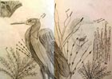
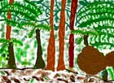
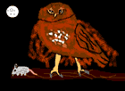
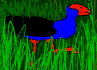
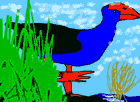
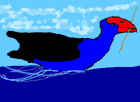

Level 3: Animated Animals
PLANNING AND ASSESSMENT
Throughout the unit or lesson, teachers should be conferencing both individuals and groups of students whilst encouraging them to respond to and reflect on their own work and the work of others by:
- reinforcing their knowledge of basic elements and principles
- focusing on specific principles using images and artists' work for reference.
The following elements and principles will be the focus for discussion in this learning example.
Elements
- Focus on line, tone, colour, texture, shape, form and space
Principles
- Focus on balance, contrast, harmony, tension, repetition
More information on art elements:
Index of Wallace
http://www.cyberschool.k12.or.us/~wallace/artline/art_elements_are
the_building_bl.htm
ARTLEX art directory
http://www.artlex.com/
[Back To Top]
Possible starting points
Integration with science – conservation:
As a class or in groups, consider topics such as our world, our future.
Focus on the need to preserve our national parks.
Research the lifestyle and habitat of a native bird, mammal or insect.
Introduce the concept of time-based art with a focus on the process of animation
Possible questions
A selection of the following questions would be useful as initial discussion points:
- What animals are found in the New Zealand forest and in no other country in the world?
- Why do we need to conserve our native forests?
- What are some of the problems that would occur for animals in the native forests if their habitats were destroyed?
- Think of two different native birds, insects or mammals. Compare what they eat, how they make their nests, or where they live, how they communicate, and how and why they are coloured/patterned.
- Do they have any enemies?
Display a wide range of images that show different birds and animals from New Zealand. For contrast and comparison also show some exotic non-native birds such as Toucans and Flamingo's.
Consider the following:
- How do people know about the life habits of wild animals?
- The role of the zoologist, the filmmaker (especially the animator).
- Cartoons that show animations of animals.
- Children's shared responses to an animated film that has been really exciting, scary, happy or sad.
[Back To Top]
Possible learning approaches
Children could carry out research into a native mammal/insect/bird, to discover why it is essential to preserve its habitat.
They could focus on aspects of the animal's habitat, and on the specific features of its appearance, what it eats, when it is active and any possible competitors and predators.
Their findings could be presented to an audience as a sequence of animated images.
Instructions to students:
- Use zoo visits, books, photographs and the Internet to find out about the appearance of your chosen animal. Consider viewpoint, for example, looking up at the figure from below, or a profile view, or a three-quarter view. It is easiest to draw a profile view but if you can find other view points, the animal will seem to be less stiffly posed.
- Experiment with drawing approaches using various techniques with line, tone, texture, shape, pattern and form to convey the animal.
- Return to the sources of information and find out and record details of the animal's habitat and lifestyle, (the plants found near it, its nest or shelter, its food source etc).
- Plan a composition in which the animal is the largest feature. It will be placed in its habitat so plan which details you will include from your research/drawings.
|

A research drawing of Chelsea's heron and it's habitat.
|
- Consider where to put the animal in relation to its background What is it doing?
- Develop ideas about the colours you should use in your composition. Make little colour sketches recording the colour of the animal and its surroundings. Try out techniques with dry media. Try feathering or cross-hatching to show how colours change, blend and merge.
- Tip: Make a photocopy or a tracing of your composition/drawing so you don't have to work over it, or just make little freehand copies of the bits on which it is important to try out colours and techniques.
- This composition and the colour studies will be the starting point for your animation series.
Note: The teacher should assist with the development of effective compositions by refreshing the children's awareness of the effective use of art elements and principles so they will recall the importance of scale, contrast, balance and tension. This information is valuable when delivered in the process of formative interactions with individuals and groups in relation to their own work.
[Back To Top]
Possible formative questions:
- How could you show that some of the branches are behind the animal and some are in front of it? (i.e. the element of space where devices such as overlapping, change of scale, colour and detail assist students to convey the idea of space).
|

See how Daniel has used overlapping and change of colour to convey space. |
- What colours would help us to understand the animal is in a peaceful place? In danger?
- How could you place the predator so we can feel a sense that the animal is threatened? How do you create fear, or tension?
- Your picture seems really empty except for the things (objects) you have put in the corner. Does the picture feel balanced? What could you do to make the picture more balanced?
Planning for animation:
Possible animation sequences could be brainstormed and then plotted on a storyboard.
Some children may wish to evolve their work directly on the screen once they have recreated their starting composition on the screen, and considered the probable course of their animation sequence.
- Introduce and discuss the conventions of animation. Model or show examples.
- Discuss the layout and interface of KidPix, i.e. the tools menu bar and commands.
[Download KidPix notes (Microsoft Word document, 98Kb).]
- Encourage students to explore the size, shape and colour of the KidPix tools. Limit them to using the pencil, eraser, paint pot and brush.
[Back To Top]
Putting their composition on the screen
Images can be transferred by drawing in KidPix...Paint a Picture.
Tape a transparent photocopy of the composition over the screen for the children to trace under, or, scan the image into the computer, if a scanner is available.
Once all outlines are completed and they enclose all areas completely, the children can begin to colour the image, considering art elements and principles as they go, (i.e. utilising the range of textures, colours and tones for contrast).

Vanessa has used a variety of shapes and details to describe the forest.
|

Tom's owl shows an imaginative selection of tools from those available on the tool board. |
Encourage the children to discuss their progress with you and with one another and to modify and refine their ideas in response as they go.
Using templates to create an animation sequence.
Saving a second copy of the initial picture provides an animation template.
Slight changes in relevant parts of the second slide create the first movement from the original slide.
Original positionings are best removed and amended using the eyedropper, not the eraser.
The children repeat the process of altering fresh templates until the required number of sequential frames is completed.
These are saved in sequence in a named file.
|  |

Here are three of the ten images Daniel used for his animation. |
 |
Showing the movie
The series of frames should be imported into KidPix slideshow, and saved as a movie in a named folder.
[Download KidPix notes (Microsoft Word document, 98Kb).]
Children can then show their work to an audience, discussing the processes used and the particular use of visual arts elements and principles that helped them to express their ideas.
View the Pukeko animation
[Back To Top]
Materials
Materials and resources /management issues
- Computer
- KidPix Studio
- Mylar transparency film for OHTs
- Drawing media.
- Books on native animals of New Zealand
- Books on national parks, their flora and fauna
- Chicken Run CDROM, Shrek or Ice Age video or similar
- Visit to local aviary or zoo.
- Access to computer suite (recommended once a week for up to 1.5 hours)
- Two additional computers in the classroom
[Back To Top]
Assessment
Possible specific learning outcomes include:
Students will be able to:
- apply knowledge of visual arts elements and principles and use the processes of computer animation to create a time-based artwork (PK).
- generate and develop visual ideas from research, drawing and imagination, to convey information about a native animal, its habitat and its lifestyle (DI).
- describe ways that different sequential movements convey ideas about the lifestyle of particular animals (CI).
- Discuss the purposes of animated images in relation to their own lives. Consider when animation became possible and the affect of the process on the information conveyed (UC).
[Back To Top]
|


){kind=link}